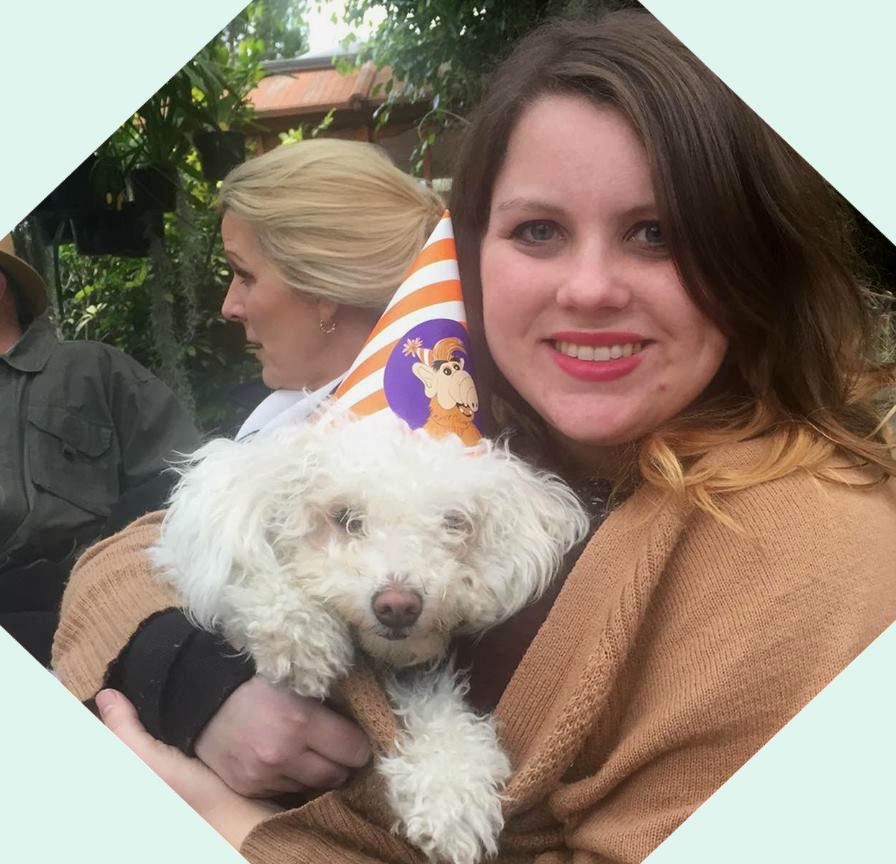

Welcome to
~Brittany Rausch's~
Portfolio

In general I am a dabbler. I dabble in different mediums of art, singing, decorating, writing, etc. I love being creative, as well as reading and watching movies. I am also trying to write a book, but only time will tell if I finish it.
I love John Irving's "A Prayer for Owen Meany" as well as many of his other books, Jane Austen, His Dark materials, Harry Potter, Rebecca, Nevermore, and many many more that are not on the top of my head. The last couple years I have a had a soft spot for Young Adult fiction.
I consider myself a movie buff, so this is just a select few: Sleepless in Seattle, Monty Python and the Holy Grail, The Third Man, Dr. Strangelove, Kiss Kiss Bang Bang, Amelie, The Shawshank Redemption, Charade, Shaun of the Dead, The Count of Monte Cristo, Airplane, Minority Report, Rear Window, Love Actually, About a Boy, Ten things I hate about you, Office Space, Garden State, 500 Days of Summer, An Education...
Arrested Development, Firefly, Sherlock, Masterpiece Theater, White Collar, True Blood, Southpark, Scrubs, The Daily Show, Psych, Bones, Fringe, Late night with Craig Ferguson, whenever I can.....Thank god for Tivo!
My taste in music is very eclectic, I like almost every genre (except most rap, I think Rappers keep making music in order to make more videos with half naked women who "want to get down" or something just as fun. Not too dissapoint, but half naked women are not my kind of thing). Now that you know my true feelings for rap music I can go on with my favorites. Queen, Elton John, Billy Joel, Jewel, Ella Fitzgerald, Barenaked Ladies, Ingrid Michealson, A Great Big World, Greg Holden, Save Ferris, Sublime, Aretha Franklin, They Might Be Giants, Jack Johnson, Colin Hays, Disney songs (yes, I have a Disney Pandora station, and yes it is probably a sign of regression, do I care that your judging me, no) etc. Musicals: Rent, Les Miserables, And Aida. Theres more, I just don't want to wear you out